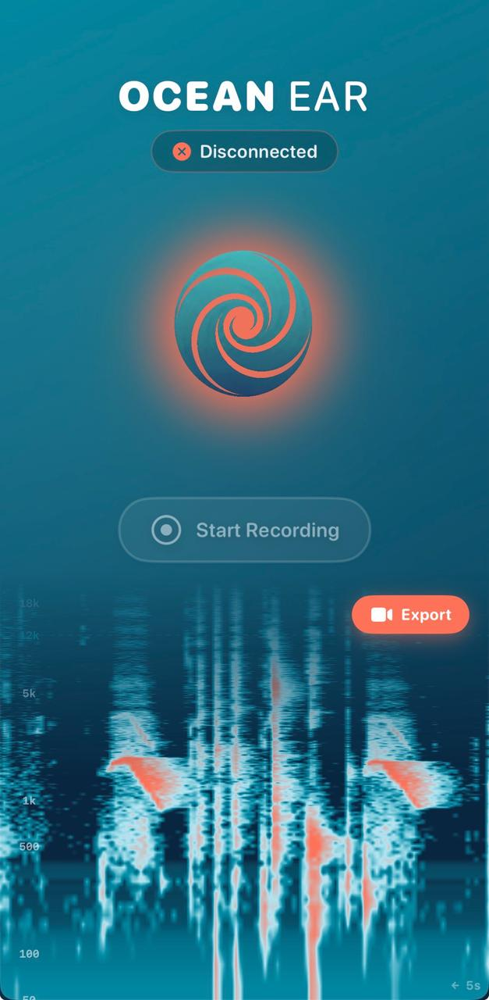
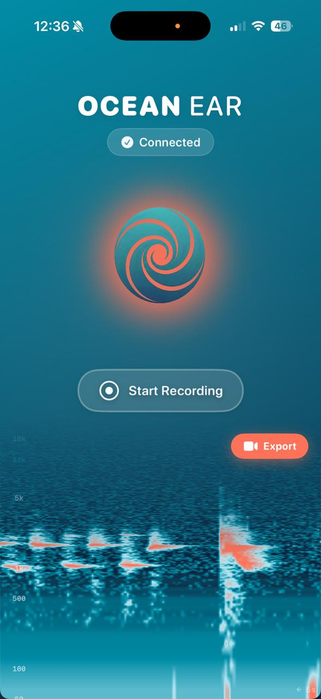
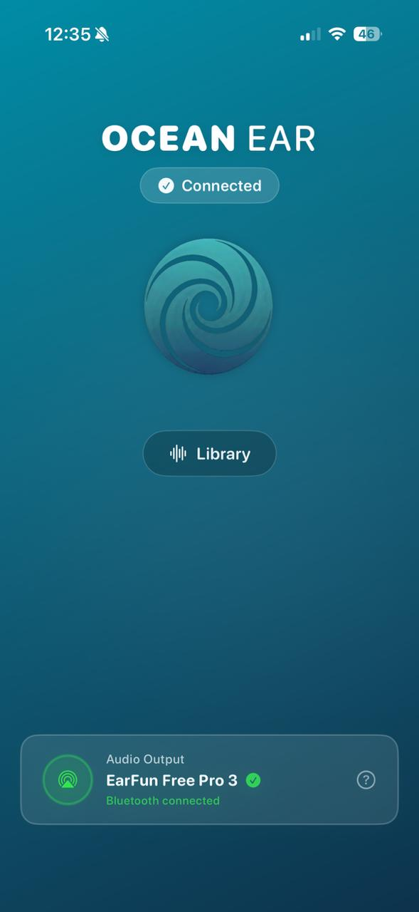

The complete feature reference for every platform. Every capability, one place.
Connect your hydrophone, tap the Ocean Ear button — done. Audio from the ocean floor streams in real time to your iPhone, with professional EQ and a high-pass filter that cuts low-frequency noise.
The app auto-detects your hydrophone, configures the audio session, and routes signal through Bluetooth headphones or built-in speaker. No configuration. No manual required.

Live-Streaming + Auto-Detect
See the ocean while you hear it. Our Metal GPU-accelerated spectrogram renders underwater frequencies in real time at 60 FPS — smoother than any hydrophone app on the market.
Hybrid frequency mapping combines logarithmic scaling for low frequencies (50 Hz–12 kHz) with linear scaling for highs (12–24 kHz). Dolphin clicks, whale song, and reef noise become instantly visible.
Built-in Spectral Noise Reduction filters background noise from the display — you only see what matters.
GPU-beschleunigtes 60 FPS Spektrogramm
Hit record, capture, done. OceanEar records uncompressed mono audio direct from the hydrophone — raw, unprocessed data ready for scientific analysis.
Every recording is automatically tagged with GPS coordinates, timestamp, device info, and optional notes. Nothing gets lost.

M4A/AAC Recording + GPS Metadata
Intelligent noise reduction at the press of a button. The Wiener Filter analyses the first second of your recording as a noise profile, then removes interference frequency by frequency — with phase preservation for natural-sounding output.
The Wiener Filter calculates an optimal gain per frequency band. Noise is suppressed, signal is preserved — the ocean comes through clean.
After denoising, recordings are automatically normalised to −6 dB. Quiet captures get louder; loud spikes stay controlled.
Real-time status: Analysing Noise → Denoising → Normalising → Saving. Cancel at any time.
Phone screen washing out in sunlight? Not with OceanEar. One tap on the sun icon activates Sun Mode:
Max Brightness — Screen goes to 100%, Auto-Lock disabled.
Inverted Spectrogram — Light background with dark signals, optimised for direct sunlight via a dedicated GPU colour palette.
One tap back — Deactivating Sun Mode restores previous brightness.
Sun Mode
Inverted high-contrast palette
Maximum display brightness
No auto-lock during session
Every recording is automatically georeferenced. OceanEar's smart geocoding algorithm prioritises bodies of water — instead of "Coastal Road 5" the app shows "Pacific Ocean" or "Wellington Harbour".
Energy-optimised: GPS only runs during active recordings at 100m accuracy — saving up to 80% battery compared to standard GPS tracking.
Water-Priority Geocoding
Oceans, bays, rivers > street names
Latitude, longitude, altitude, accuracy
Interactive map in recording details
Every recording in one place. Organised, searchable, with full metadata.

Latest recordings first. File name, size, duration, and metadata indicator at a glance.
Every recording shows its capture location on an interactive map. Add your own notes and tags — perfect for field research.
Direct from the library: play audio, enhance with the Wiener Filter, compare the result. One workflow.
JSON export with full details: GPS, device, sample rate, app version, timestamp. Ready for citizen science databases.
Erstelle atemberaubende Split-Screen-Videos: Kamera-Feed oben, Live-Spektrogramm unten. Mit Ocean Ear Branding-Badge und Standort-Overlay.
Perfect for Instagram Reels, TikTok, and YouTube Shorts. Show the world what the ocean sounds like — and looks like.
Kamera + Spektrogramm
Split-Screen Video Export
Instagram, TikTok, YouTube Shorts
Ocean Ear Branding + Location Badge
For those who want to know exactly what's under the hood.
| Audio Engine | |
|---|---|
| Framework | AVAudioEngine with real-time routing |
| Sample Rate | Up to 192 kHz (device dependent) |
| FFT | 4096-Point FFT, 2048-Sample Hop Size |
| Frequenz-Bins | 1024 Bins, Hybrid Log/Linear Mapping |
| Live Processing | High-Pass EQ (30 Hz cutoff) + 10× Gain |
| Recording Format | M4A / AAC, Mono, native sample rate |
| Enhancement | |
| Algorithmus | Wiener Filter mit Phase-Preservation |
| Noise Profile | 1.0s analysis, overlap-add synthesis |
| Normalisation | Peak normalisation to −6 dB |
| DSP Framework | Apple vDSP / Accelerate |
| Visualisierung | |
| Renderer | Metal GPU (MTKView), 60 FPS |
| Circular Buffer | Zero-copy texture with bilinear interpolation |
| Noise Reduction | Spectral Subtraction (α=1.2, β=0.02) |
| Colour Palettes | Ocean (default), Sun Mode (inverted) |
| Location | |
| GPS | CoreLocation, 100m accuracy (energy-optimised) |
| Geocoding | CLGeocoder with water-priority algorithm |
| Metadata | JSON export: GPS, device, audio specs, notes |
| Platform | |
| Minimum iOS | iOS 16.0 |
| Optimised for | iPhone 12 and later |
| Design | SF Rounded, Organic HiFi Design System |
Divers, snorkellers, and ocean lovers who want to hear the sea, not just see it. Plug & play gets you started in seconds.
GPS-tagged recordings with full metadata — ready for scientific databases. The AI enhancement makes even amateur recordings analytically useful.
The perfect tool for marine biology courses. The live spectrogram makes acoustics tangible. Recording library ready for coursework and research papers.
Split-screen video export for Reels, TikTok, and YouTube Shorts. Show the world what the ocean sounds like — with professional branding built in.
Join the OceanEar beta on TestFlight and hear what's happening beneath the surface.